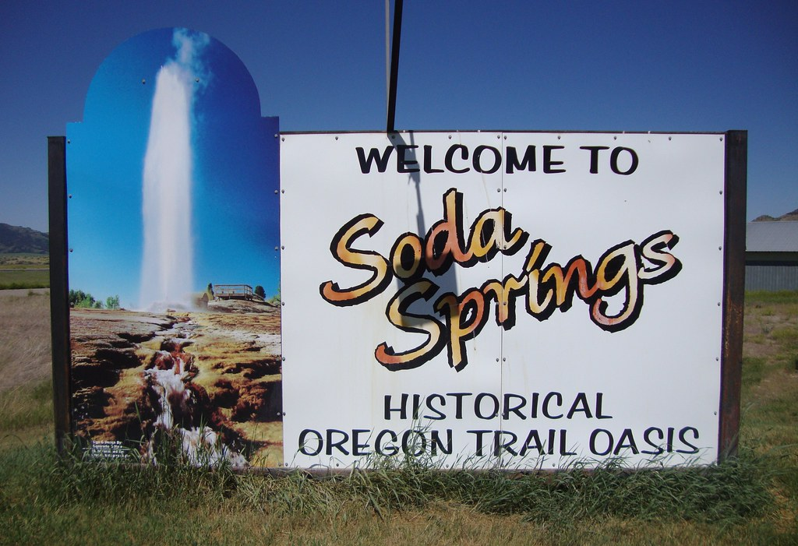

Soda-Springs, Idaho

Weather Summary
Currently:
Temp:
Wind Chill:
Humidty:
Wind Speed:
Five Days Forcast
|
|
|
|
|
|
Latest News
The kind community project keeping Preston’s international students safe and happy through the pandemic
A Preston community group is helping the city’s international students remain in good physical, mental and emotional health during the pandemic. Kind Communities was set up during lockdown in February 2021, with five Student Health Champions and five Student Volunteer Health Champions who speak nine languages between them. In just over four months, Kind Communities has run various campaigns including encouraging students from Commonwealth countries to vote in the UK elections, answering queries about vaccines, and providing emergency food assistance to 122 vulnerable students. The group’s main focus is a consultation to assess the impact of the pandemic on Preston’s South Asian Heritage international students. Along with UCLan, local government and the NHS, the group will be working on the steps needed to keep the students and the wider Preston community safe and healthy. Monish Mohan, Student Communication Champion at Kind Communities, said: “Every one of us has been affected by the pandemic, and international students have faced the same difficult challenges whilst living away from their families and loved ones. “As Prestonians are renowned for their warmth and hospitality, we wanted to show that no matter where students were from, and regardless of their circumstances, they are an integral part of the wider Preston family and are welcome in our city.”
Contact Information
💻 Nouveauinfo.com
📞 xxxxxxx
📭 P.O box xxx
.png?v=1601997971996)
.png?v=1601997921596)
.png?v=1601999397723)